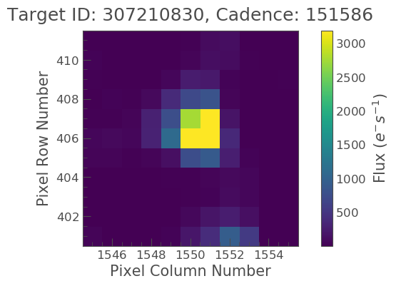
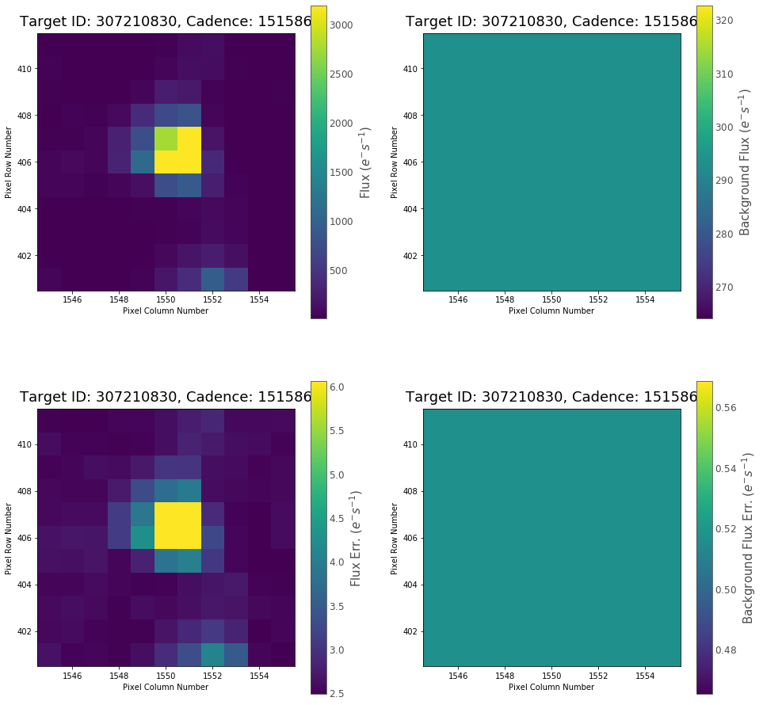
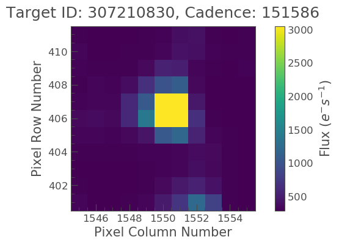

Understanding TargetPixelFile objects
Learning goals
In this tutorial we will learn the following, - What a TESS Target Pixel File (TPF) is. - How to obtain a TPF from the MAST archive via Lightkurve. - How to plot the TPF image. - How to access the metadata, and understand the file properties and units.
We will also show the user where they can find more details about TESS Target Pixel Files.
What is a Target Pixel File?
The TESS telescope observes stars for long periods of time, just under a month per sector. By doing so TESS observes how the brightnesses of a star change over time.
Not all data for the stars in a given sector is recorded. Instead, pixels are selected around certain targeted stars. These cut-out images are called Target Pixel Files, or TPFs. By combining the amount of flux in the pixels where the star appears, you can make a measurement of the amount of light form a star in that observation.
TPFs can be thought of as stacks of images, with one image for every telescopic time-stamp. Each time-stamp is referred to as a cadence. The TPF images are cut out ‘postage stamps’ of the full observations, making them easier to work with. TPFs also include information about the astronomical background to the image, which is removed from the raw flux.
TPF files are stored in a FITS file format. The Lightkurve package allows us to work with FITS files without having to directly handle its detailed file structure.
TPFs are typically the first port of call when studying a star with TESS. They allow us to see where our data is coming from, and identify potential sources of noise or systematic trends.
In this tutorial we’ll cover the basics of working with TPFs in Lightkurve using the TessTargetPixelFile class.
Imports
This tutorial requires: - Lightkurve to work with TPF files. - Matplotlib for plotting.
%matplotlib inline import lightkurve as lk import matplotlib.pyplot as plt
Defining terms
- Target Pixel File (TPF): A file containing the original CCD pixel observations from which light curves are extracted.
- Cadence: The rate at which TESS photometric observations are stored.
- Sector: One of TESS’s 28 (to date) observing periods, approximately ~27 days in duration.
Downloading data
The TPFs of stars observed by the TESS mission are stored on the Mikulksi Archive for Space Telescopes (MAST) archive, along with metadata about the observations, such as the CCD used.
Besides raw data measured by the CCD, it will also carry information about the astronomical background, and the recommended aperture for extracting flux.
You can search for a TPF using the search_targetpixelfile() function. This will search for the right file in the MAST data archive.
Note here that search_targetpixelfile can take several inputs as listed below, only the first is required,
- The ID number or name for the object of interest
- The mission that the object has been observed in.
- Which part of the survey you want to obtain the data from. The TESS the survey is divided up into sectors.
- The quality of the data you want to obtain. This is set using the keyword quality_bitmask and more information about this and can be found here.
In this case we want the Target Pixel File with TESS ID - TIC 307210830, which refers to L 98-59, a bright M dwarf star at a distance of 10.6 pc. This star is host to three terrestrial-sized planets.
search_result = lk.search_targetpixelfile('TIC 307210830') search_resultSearchResult containing 7 data products.
| # | observation | author | target_name | productFilename | distance |
|---|---|---|---|---|---|
| 0 | TESS Sector 2 | SPOC | 307210830 | tess2018234235059-s0002-0000000307210830-0121-s_tp.fits | 0.0 |
| 1 | TESS Sector 5 | SPOC | 307210830 | tess2018319095959-s0005-0000000307210830-0125-s_tp.fits | 0.0 |
| 2 | TESS Sector 8 | SPOC | 307210830 | tess2019032160000-s0008-0000000307210830-0136-s_tp.fits | 0.0 |
| 3 | TESS Sector 9 | SPOC | 307210830 | tess2019058134432-s0009-0000000307210830-0139-s_tp.fits | 0.0 |
| 4 | TESS Sector 10 | SPOC | 307210830 | tess2019085135100-s0010-0000000307210830-0140-s_tp.fits | 0.0 |
| 5 | TESS Sector 11 | SPOC | 307210830 | tess2019112060037-s0011-0000000307210830-0143-s_tp.fits | 0.0 |
| 6 | TESS Sector 12 | SPOC | 307210830 | tess2019140104343-s0012-0000000307210830-0144-s_tp.fits | 0.0 |
The search function returns a SearchResult object, displaying a list.
In this list, each row represents a different observing period. We find that TESS recorded 7 sectors of data for this target across 1 year. The observation column lists the TESS sector. The target_name represents the TESS Input Catalogue (TIC) ID of the target, and the productFilename column is the name of the FITS files downloaded from MAST. The distance column shows the separation on the sky between the searched coordinates and the downloaded objects— this is only relevant when searching for specific coordinates in the sky, and not when looking for individual objects.
The SearchResult object also has several convenient operations, for example, we can select the second data product in the list as follows:
search_result[1]SearchResult containing 1 data products.
| # | observation | author | target_name | productFilename | distance |
|---|---|---|---|---|---|
| 0 | TESS Sector 5 | SPOC | 307210830 | tess2018319095959-s0005-0000000307210830-0125-s_tp.fits | 0.0 |
This allows us look at the TPF from sector 5 only. Let’s now download this data via the download() method. Note that we want to specify the quality of the data that we are obtaining, and as such use quality_bitmask=‘default’
tpf_file = search_result[1].download(quality_bitmask='default') tpf_file
TessTargetPixelFile(TICID: 307210830)
The above code has created a variable named tpf_file which is a Python object of type TessTargetPixelFile. You would get the same result if you used the following code instead,
tpf_file = lk.search_targetpixelfile('TIC 307210830', mission="TESS", sector=5).download(quality_bitmask='default')
This file object provides a convenient way to interact with the data file that has been returned by the archive, which contains both the TPF as well as metadata about the observations.
Before diving into the properties of the TessTargetPixelFile, we can plot the data, also using Lightkurve.
%matplotlib inline tpf_file.plot();
The above figure indicates the pixels on the CCD camera, with which L 98-59 was observed. The color indicates the amount of flux in each pixel, in electrons per second. The y-axis shows the pixel row, and the x-axis shows the pixel column. The title tells us the TESS Input Catalogue (TIC) identification number of the target, and the observing cadence of this image. By default, plot() shows the first observation cadence in the Sector.
It looks like our star is isolated, so we can extract a light-curve by simply summing up all the pixel values in each image. To do this we use the to_lightcurve function which collects the flux of an object from specified pixels, i.e., an aperture mask. How to do this is explained within the LightCurve Objects tutorial.
Note
You can also download TPF FITS files from the archive by hand, store them on your local disk, and open them using the lk.open(<filename>) function. This function will return a TessTargetPixelFile object just as in the above example.
Accessing the metadata
Our TessTargetPixelFile has lots of information from MAST about the observation, this data is dubbed metadata.
Most metadata are stored in the headers of the FITS files. These can be accessed from the TessTargetPixelFile through the get_header() method.
For example, the first extension (“extension 0”) of the file provides metadata related to the star, such as its magnitude in different passbands, its movement and position on the sky, and its location on TESS’s CCD detector:
tpf_file.get_header(ext=0)
SIMPLE = T / conforms to FITS standards BITPIX = 8 / array data type NAXIS = 0 / number of array dimensions EXTEND = T / file contains extensions NEXTEND = 3 / number of standard extensions EXTNAME = 'PRIMARY ' / name of extension EXTVER = 1 / extension version number (not format version) SIMDATA = F / file is based on simulated data ORIGIN = 'NASA/Ames' / institution responsible for creating this file DATE = '2019-02-10' / file creation date. TSTART = 1437.976957548360 / observation start time in TJD TSTOP = 1464.288062220275 / observation stop time in TJD DATE-OBS= '2018-11-15T11:25:39.948Z' / TSTART as UTC calendar date DATE-END= '2018-12-11T18:53:39.392Z' / TSTOP as UTC calendar date CREATOR = '7561 TargetPixelExporterPipelineModule' / pipeline job and program us PROCVER = 'spoc-3.3.55-20190205' / SW version FILEVER = '1.0 ' / file format version TIMVERSN= 'OGIP/93-003' / OGIP memo number for file format TELESCOP= 'TESS ' / telescope INSTRUME= 'TESS Photometer' / detector type DATA_REL= 7 / data release version number OBJECT = 'TIC 307210830' / string version of target id TICID = 307210830 / unique tess target identifier SECTOR = 5 / Observing sector CAMERA = 4 / Camera number CCD = 4 / CCD chip number PXTABLE = 136 / pixel table id RADESYS = 'ICRS ' / reference frame of celestial coordinates RA_OBJ = 124.5319000000000000 / [deg] right ascension DEC_OBJ = -68.3130000000000000 / [deg] declination EQUINOX = 2000.0 / equinox of celestial coordinate system PMRA = 96.47160000 / [mas/yr] RA proper motion PMDEC = -340.08300000 / [mas/yr] Dec proper motion PMTOTAL = 353.50136703 / [mas/yr] total proper motion TESSMAG = 9.39299965 / [mag] TESS magnitude TEFF = 3469.00000000 / [K] Effective temperature LOGG = 4.94010019 / [cm/s2] log10 surface gravity MH = / [log10([M/H])] metallicity RADIUS = 0.31299999 / [solar radii] stellar radius TICVER = 7 / TICVER CRMITEN = T / spacecraft cosmic ray mitigation enabled CRBLKSZ = 10 / [exposures] s/c cosmic ray mitigation block siz CRSPOC = F / SPOC cosmic ray cleaning enabled CHECKSUM= 'OGRBPEO9OEOAOEO7' / HDU checksum updated 2019-02-10T15:15:39Z
This is an AstroPy astropy.io.fits.Header object, which has many convenient features. For example, you can retrieve the value of an individual keyword as follows:
tpf_file.get_header(ext=0)['Sector']
5
When constructing a TessTargetPixelFilefrom a FITS file, Lightkurve carries a subset of the metadata through into user-friendly object properties for convenience. You can view these data via the following,
tpf_file.show_properties()
Attribute Description
--------------- -----------------------------------------------------------------------------------------------------------------------------------------------------------
camera 4
ccd 4
column 1545
row 401
sector 5
targetid 307210830
mission TESS
path /Users/rhounsel/.lightkurve-cache/mastDownload/TESS/tess2018319095959-s0005-0000000307210830-0125-s/tess2018319095959-s0005-0000000307210830-0125-s_tp.fits
quality_bitmask default
hdu PRIMARY, PIXELS, APERTURE, TARGET COSMIC RAY
background_mask array (11, 11)
cadenceno array (17894,)
flux array (17894, 11, 11)
flux_bkg array (17894, 11, 11)
flux_bkg_err array (17894, 11, 11)
flux_err array (17894, 11, 11)
nan_time_mask array (17894,)
pipeline_mask array (11, 11)
pos_corr1 array (17894,)
pos_corr2 array (17894,)
quality array (17894,)
quality_mask array (18944,)
dec <class 'float'>
ra <class 'float'>
shape <class 'tuple'>
time <class 'astropy.time.core.Time'>
wcs astropy.wcs.wcs.WCS
This means that there are a small number of very common keywords/columns have a shorthand alias which you can call via Lightkurve, see below.
tpf_file.sector
5
tpf_file.mission
'TESS'
tpf_file.ra
124.5319
You can view other data resources stored in this extension by viewing the associated FITS header, for example the cadence number.
tpf_file.hdu[1].data['cadenceno']
array([151576, 151577, 151578, ..., 170517, 170518, 170519], dtype=int32)
We can also look at the values in the second extension of the fits file by accessing the AstroPy FITS HDUList object. For example, to look at all the column titles:
tpf_file.hdu[1].header
XTENSION= 'BINTABLE' / marks the beginning of a new HDU BITPIX = 8 / array data type NAXIS = 2 / number of array dimensions NAXIS1 = 2448 / length of first array dimension NAXIS2 = 18944 / length of second array dimension PCOUNT = 0 / group parameter count (not used) GCOUNT = 1 / group count (not used) TFIELDS = 11 / number of table fields TTYPE1 = 'TIME ' / column title: data time stamps TFORM1 = 'D ' / column format: 64-bit floating point TUNIT1 = 'BJD - 2457000, days' / column units: Barycenter corrected TESS Julian TDISP1 = 'D14.7 ' / column display format TTYPE2 = 'TIMECORR' / column title: barycentric correction TFORM2 = 'E ' / column format: 32-bit floating point TUNIT2 = 'd ' / column units: Days TDISP2 = 'E14.7 ' / column display format TTYPE3 = 'CADENCENO' / column title: unique cadence number TFORM3 = 'J ' / column format: signed 32-bit integer TDISP3 = 'I10 ' / column display format TTYPE4 = 'RAW_CNTS' / column title: raw pixel counts TFORM4 = '121J ' / column format: image of signed 32-bit integers TUNIT4 = 'count ' / column units: count TDISP4 = 'I8 ' / column display format TDIM4 = '(11,11) ' / column dimensions: pixel aperture array TNULL4 = -1 / column null value indicator WCSN4P = 'PHYSICAL' / table column WCS name WCAX4P = 2 / table column physical WCS dimensions 1CTY4P = 'RAWX ' / table column physical WCS axis 1 type, CCD col 2CTY4P = 'RAWY ' / table column physical WCS axis 2 type, CCD row 1CUN4P = 'PIXEL ' / table column physical WCS axis 1 unit 2CUN4P = 'PIXEL ' / table column physical WCS axis 2 unit 1CRV4P = 1545 / table column physical WCS ax 1 ref value 2CRV4P = 401 / table column physical WCS ax 2 ref value 1CDL4P = 1.0 / table column physical WCS a1 step 2CDL4P = 1.0 / table column physical WCS a2 step 1CRP4P = 1 / table column physical WCS a1 reference 2CRP4P = 1 / table column physical WCS a2 reference WCAX4 = 2 / number of WCS axes 1CTYP4 = 'RA---TAN' / right ascension coordinate type 2CTYP4 = 'DEC--TAN' / declination coordinate type 1CRPX4 = 6.441276957091532 / [pixel] reference pixel along image axis 1 2CRPX4 = 6.350830655251798 / [pixel] reference pixel along image axis 2 1CRVL4 = 124.5332711499119100 / [deg] right ascension at reference pixel 2CRVL4 = -68.3147861875501700 / [deg] declination at reference pixel 1CUNI4 = 'deg ' / physical unit in column dimension 2CUNI4 = 'deg ' / physical unit in row dimension 1CDLT4 = -0.005486384927700 / [deg] pixel scale in RA dimension 2CDLT4 = 0.005486384927700364 / [deg] pixel scale in DEC dimension 11PC4 = -0.5337830820472862 / linear transformation matrix element cos(th) 12PC4 = 0.8130667476670455 / linear transformation matrix element -sin(th) 21PC4 = 0.8497123440435488 / linear transformation matrix element sin(th) 22PC4 = 0.5791250385649829 / linear transformation matrix element cos(th) TTYPE5 = 'FLUX ' / column title: calibrated pixel flux TFORM5 = '121E ' / column format: image of 32-bit floating point TUNIT5 = 'e-/s ' / column units: electrons per second TDISP5 = 'E14.7 ' / column display format TDIM5 = '(11,11) ' / column dimensions: pixel aperture array WCSN5P = 'PHYSICAL' / table column WCS name WCAX5P = 2 / table column physical WCS dimensions 1CTY5P = 'RAWX ' / table column physical WCS axis 1 type, CCD col 2CTY5P = 'RAWY ' / table column physical WCS axis 2 type, CCD row 1CUN5P = 'PIXEL ' / table column physical WCS axis 1 unit 2CUN5P = 'PIXEL ' / table column physical WCS axis 2 unit 1CRV5P = 1545 / table column physical WCS ax 1 ref value 2CRV5P = 401 / table column physical WCS ax 2 ref value 1CDL5P = 1.0 / table column physical WCS a1 step 2CDL5P = 1.0 / table column physical WCS a2 step 1CRP5P = 1 / table column physical WCS a1 reference 2CRP5P = 1 / table column physical WCS a2 reference WCAX5 = 2 / number of WCS axes 1CTYP5 = 'RA---TAN' / right ascension coordinate type 2CTYP5 = 'DEC--TAN' / declination coordinate type 1CRPX5 = 6.441276957091532 / [pixel] reference pixel along image axis 1 2CRPX5 = 6.350830655251798 / [pixel] reference pixel along image axis 2 1CRVL5 = 124.5332711499119100 / [deg] right ascension at reference pixel 2CRVL5 = -68.3147861875501700 / [deg] declination at reference pixel 1CUNI5 = 'deg ' / physical unit in column dimension 2CUNI5 = 'deg ' / physical unit in row dimension 1CDLT5 = -0.005486384927700 / [deg] pixel scale in RA dimension 2CDLT5 = 0.005486384927700364 / [deg] pixel scale in DEC dimension 11PC5 = -0.5337830820472862 / linear transformation matrix element cos(th) 12PC5 = 0.8130667476670455 / linear transformation matrix element -sin(th) 21PC5 = 0.8497123440435488 / linear transformation matrix element sin(th) 22PC5 = 0.5791250385649829 / linear transformation matrix element cos(th) TTYPE6 = 'FLUX_ERR' / column title: 1-sigma calibrated uncertainty TFORM6 = '121E ' / column format: image of 32-bit floating point TUNIT6 = 'e-/s ' / column units: electrons per second (1-sigma) TDISP6 = 'E14.7 ' / column display format TDIM6 = '(11,11) ' / column dimensions: pixel aperture array WCSN6P = 'PHYSICAL' / table column WCS name WCAX6P = 2 / table column physical WCS dimensions 1CTY6P = 'RAWX ' / table column physical WCS axis 1 type, CCD col 2CTY6P = 'RAWY ' / table column physical WCS axis 2 type, CCD row 1CUN6P = 'PIXEL ' / table column physical WCS axis 1 unit 2CUN6P = 'PIXEL ' / table column physical WCS axis 2 unit 1CRV6P = 1545 / table column physical WCS ax 1 ref value 2CRV6P = 401 / table column physical WCS ax 2 ref value 1CDL6P = 1.0 / table column physical WCS a1 step 2CDL6P = 1.0 / table column physical WCS a2 step 1CRP6P = 1 / table column physical WCS a1 reference 2CRP6P = 1 / table column physical WCS a2 reference WCAX6 = 2 / number of WCS axes 1CTYP6 = 'RA---TAN' / right ascension coordinate type 2CTYP6 = 'DEC--TAN' / declination coordinate type 1CRPX6 = 6.441276957091532 / [pixel] reference pixel along image axis 1 2CRPX6 = 6.350830655251798 / [pixel] reference pixel along image axis 2 1CRVL6 = 124.5332711499119100 / [deg] right ascension at reference pixel 2CRVL6 = -68.3147861875501700 / [deg] declination at reference pixel 1CUNI6 = 'deg ' / physical unit in column dimension 2CUNI6 = 'deg ' / physical unit in row dimension 1CDLT6 = -0.005486384927700 / [deg] pixel scale in RA dimension 2CDLT6 = 0.005486384927700364 / [deg] pixel scale in DEC dimension 11PC6 = -0.5337830820472862 / linear transformation matrix element cos(th) 12PC6 = 0.8130667476670455 / linear transformation matrix element -sin(th) 21PC6 = 0.8497123440435488 / linear transformation matrix element sin(th) 22PC6 = 0.5791250385649829 / linear transformation matrix element cos(th) TTYPE7 = 'FLUX_BKG' / column title: calibrated background flux TFORM7 = '121E ' / column format: image of 32-bit floating point TUNIT7 = 'e-/s ' / column units: electrons per second TDISP7 = 'E14.7 ' / column display format TDIM7 = '(11,11) ' / column dimensions: pixel aperture array WCSN7P = 'PHYSICAL' / table column WCS name WCAX7P = 2 / table column physical WCS dimensions 1CTY7P = 'RAWX ' / table column physical WCS axis 1 type, CCD col 2CTY7P = 'RAWY ' / table column physical WCS axis 2 type, CCD row 1CUN7P = 'PIXEL ' / table column physical WCS axis 1 unit 2CUN7P = 'PIXEL ' / table column physical WCS axis 2 unit 1CRV7P = 1545 / table column physical WCS ax 1 ref value 2CRV7P = 401 / table column physical WCS ax 2 ref value 1CDL7P = 1.0 / table column physical WCS a1 step 2CDL7P = 1.0 / table column physical WCS a2 step 1CRP7P = 1 / table column physical WCS a1 reference 2CRP7P = 1 / table column physical WCS a2 reference WCAX7 = 2 / number of WCS axes 1CTYP7 = 'RA---TAN' / right ascension coordinate type 2CTYP7 = 'DEC--TAN' / declination coordinate type 1CRPX7 = 6.441276957091532 / [pixel] reference pixel along image axis 1 2CRPX7 = 6.350830655251798 / [pixel] reference pixel along image axis 2 1CRVL7 = 124.5332711499119100 / [deg] right ascension at reference pixel 2CRVL7 = -68.3147861875501700 / [deg] declination at reference pixel 1CUNI7 = 'deg ' / physical unit in column dimension 2CUNI7 = 'deg ' / physical unit in row dimension 1CDLT7 = -0.005486384927700 / [deg] pixel scale in RA dimension 2CDLT7 = 0.005486384927700364 / [deg] pixel scale in DEC dimension 11PC7 = -0.5337830820472862 / linear transformation matrix element cos(th) 12PC7 = 0.8130667476670455 / linear transformation matrix element -sin(th) 21PC7 = 0.8497123440435488 / linear transformation matrix element sin(th) 22PC7 = 0.5791250385649829 / linear transformation matrix element cos(th) TTYPE8 = 'FLUX_BKG_ERR' / column title: 1-sigma cal. background uncertain TFORM8 = '121E ' / column format: image of 32-bit floating point TUNIT8 = 'e-/s ' / column units: electrons per second (1-sigma) TDISP8 = 'E14.7 ' / column display format TDIM8 = '(11,11) ' / column dimensions: pixel aperture array WCSN8P = 'PHYSICAL' / table column WCS name WCAX8P = 2 / table column physical WCS dimensions 1CTY8P = 'RAWX ' / table column physical WCS axis 1 type, CCD col 2CTY8P = 'RAWY ' / table column physical WCS axis 2 type, CCD row 1CUN8P = 'PIXEL ' / table column physical WCS axis 1 unit 2CUN8P = 'PIXEL ' / table column physical WCS axis 2 unit 1CRV8P = 1545 / table column physical WCS ax 1 ref value 2CRV8P = 401 / table column physical WCS ax 2 ref value 1CDL8P = 1.0 / table column physical WCS a1 step 2CDL8P = 1.0 / table column physical WCS a2 step 1CRP8P = 1 / table column physical WCS a1 reference 2CRP8P = 1 / table column physical WCS a2 reference WCAX8 = 2 / number of WCS axes 1CTYP8 = 'RA---TAN' / right ascension coordinate type 2CTYP8 = 'DEC--TAN' / declination coordinate type 1CRPX8 = 6.441276957091532 / [pixel] reference pixel along image axis 1 2CRPX8 = 6.350830655251798 / [pixel] reference pixel along image axis 2 1CRVL8 = 124.5332711499119100 / [deg] right ascension at reference pixel 2CRVL8 = -68.3147861875501700 / [deg] declination at reference pixel 1CUNI8 = 'deg ' / physical unit in column dimension 2CUNI8 = 'deg ' / physical unit in row dimension 1CDLT8 = -0.005486384927700 / [deg] pixel scale in RA dimension 2CDLT8 = 0.005486384927700364 / [deg] pixel scale in DEC dimension 11PC8 = -0.5337830820472862 / linear transformation matrix element cos(th) 12PC8 = 0.8130667476670455 / linear transformation matrix element -sin(th) 21PC8 = 0.8497123440435488 / linear transformation matrix element sin(th) 22PC8 = 0.5791250385649829 / linear transformation matrix element cos(th) TTYPE9 = 'QUALITY ' / column title: pixel quality flags TFORM9 = 'J ' / column format: signed 32-bit integer TDISP9 = 'B16.16 ' / column display format TTYPE10 = 'POS_CORR1' / column title: column position correction TFORM10 = 'E ' / column format: 32-bit floating point TUNIT10 = 'pixel ' / column units: pixel TDISP10 = 'E14.7 ' / column display format TTYPE11 = 'POS_CORR2' / column title: row position correction TFORM11 = 'E ' / column format: 32-bit floating point TUNIT11 = 'pixel ' / column units: pixel TDISP11 = 'E14.7 ' / column display format INHERIT = T / inherit the primary header EXTNAME = 'PIXELS ' / name of extension EXTVER = 1 / extension version number (not format version) SIMDATA = F / file is based on simulated data TELESCOP= 'TESS ' / telescope INSTRUME= 'TESS Photometer' / detector type OBJECT = 'TIC 307210830' / string version of target id TICID = 307210830 / unique tess target identifier RADESYS = 'ICRS ' / reference frame of celestial coordinates RA_OBJ = 124.5332711499119100 / [deg] right ascension DEC_OBJ = -68.3147861875501700 / [deg] declination EQUINOX = 2000.0 / equinox of celestial coordinate system EXPOSURE= 19.768406119079 / [d] time on source TIMEREF = 'SOLARSYSTEM' / barycentric correction applied to times TASSIGN = 'SPACECRAFT' / where time is assigned TIMESYS = 'TDB ' / time system is Barycentric Dynamical Time (TDB) BJDREFI = 2457000 / integer part of BTJD reference date BJDREFF = 0.00000000 / fraction of the day in BTJD reference date TIMEUNIT= 'd ' / time unit for TIME, TSTART and TSTOP TELAPSE = 26.311518552044 / [d] TSTOP - TSTART LIVETIME= 20.8387226932191570 / [d] TELAPSE multiplied by DEADC TSTART = 1437.975829368090 / observation start time in BTJD TSTOP = 1464.287347920134 / observation stop time in BTJD DATE-OBS= '2018-11-15T11:24:02.473Z' / TSTART as UTC calendar date DATE-END= '2018-12-11T18:52:37.676Z' / TSTOP as UTC calendar date DEADC = 0.7920000000000000 / deadtime correction TIMEPIXR= 0.5 / bin time beginning=0 middle=0.5 end=1 TIERRELA= 1.16E-05 / [d] relative time error INT_TIME= 1.980000000000 / [s] photon accumulation time per frame READTIME= 0.020000000000 / [s] readout time per frame FRAMETIM= 2.000000000000 / [s] frame time (INT_TIME + READTIME) NUM_FRM = 60 / number of frames per time stamp TIMEDEL = 0.001388888888888889 / [d] time resolution of data BACKAPP = T / background is subtracted DEADAPP = T / deadtime applied VIGNAPP = T / vignetting or collimator correction applied GAINA = 5.239999771118164 / [electrons/count] CCD output A gain GAINB = 5.119999885559082 / [electrons/count] CCD output B gain GAINC = 5.159999847412109 / [electrons/count] CCD output C gain GAIND = 5.159999847412109 / [electrons/count] CCD output D gain READNOIA= 10.270400047302246 / [electrons] read noise CCD output A READNOIB= 7.424000263214111 / [electrons] read noise CCD output B READNOIC= 7.327199459075928 / [electrons] read noise CCD output C READNOID= 9.391200065612793 / [electrons] read noise CCD output D NREADOUT= 48 / number of read per cadence FXDOFF = 209700 / compression fixed offset CDPP0_5 = 253.29708862 / RMS CDPP on 0.5-hr time scales CDPP1_0 = 198.38166809 / RMS CDPP on 1.0-hr time scales CDPP2_0 = 165.88996887 / RMS CDPP on 2.0-hr time scales CROWDSAP= 0.99811256 / Ratio of target flux to total flux in op. ap. FLFRCSAP= 0.89177799 / Frac. of target flux w/in the op. aperture CHECKSUM= 'OklEOiiDOiiDOiiD' / HDU checksum updated 2019-02-10T15:15:39Z TMOFST44= 1.059999942779541 / (s) readout delay for camera 4 and ccd 4 MEANBLCA= 6689 / [count] FSW mean black level CCD output A MEANBLCB= 6826 / [count] FSW mean black level CCD output B MEANBLCC= 6751 / [count] FSW mean black level CCD output C MEANBLCD= 6503 / [count] FSW mean black level CCD output D
This is a lot of information to process and if you would prefer to only look at certain items you can specify a string such as 'TYPE' for instance:
tpf_file.hdu[1].header['TTYPE*']
TTYPE1 = 'TIME ' / column title: data time stamps TTYPE2 = 'TIMECORR' / column title: barycentric correction TTYPE3 = 'CADENCENO' / column title: unique cadence number TTYPE4 = 'RAW_CNTS' / column title: raw pixel counts TTYPE5 = 'FLUX ' / column title: calibrated pixel flux TTYPE6 = 'FLUX_ERR' / column title: 1-sigma calibrated uncertainty TTYPE7 = 'FLUX_BKG' / column title: calibrated background flux TTYPE8 = 'FLUX_BKG_ERR' / column title: 1-sigma cal. background uncertain TTYPE9 = 'QUALITY ' / column title: pixel quality flags TTYPE10 = 'POS_CORR1' / column title: column position correction TTYPE11 = 'POS_CORR2' / column title: row position correction
You can find more information on FITS file handeling here
WCS
A new piece of metadata included in the TessTargetPixelFile objects is the World Coordinate System (WCS). The WCS contains information about how pixel numbers map to celestial coordinates. This is important when comparing a TPF from a TESS observation to an observation of the same star with a different telescope.
print(f'WCS: {tpf_file.wcs}')
WCS: WCS Keywords Number of WCS axes: 2 CTYPE : 'RA---TAN' 'DEC--TAN' CRVAL : 124.5332711499119 -68.31478618755017 CRPIX : 6.441276957091532 6.350830655251798 PC1_1 PC1_2 : -0.5337830820472862 0.8130667476670455 PC2_1 PC2_2 : 0.8497123440435488 0.5791250385649829 CDELT : -0.0054863849277 0.005486384927700364 NAXIS : 2448 18944
Flux & time
The most interesting data in a TESS TargetPixelFile object are the flux and time, which give access to the brightness of the observed target over time.
Time
You can access the time-stamps of the observations using the time property:
tpf_file.time
<Time object: scale='tdb' format='btjd' value=[1437.99041283 1437.99180173 1437.99319063 ... 1464.28387565 1464.28526456 1464.28665347]>
By default, time is in the TESS Barycentric Julian Day (BTJD), this is a Julian day minus 2457000.0 and corrected to the arrival times at the barycenter of the Solar System. BTJD is the format in which times are recorded in the TESS data products. The time is in the Barycentric Dynamical Time frame (TDB), which is a time system that is not affected by leap seconds, see the TESS Science Data Products Description Document for more details.
In turn, this gives you access to human-readable ISO timestamps using the astropy_time.iso property:
tpf_file.time.iso
array(['2018-11-15 11:46:11.668', '2018-11-15 11:48:11.669',
'2018-11-15 11:50:11.670', ..., '2018-12-11 18:48:46.856',
'2018-12-11 18:50:46.858', '2018-12-11 18:52:46.860'], dtype='<U23')
Beware: because these time-stamps are in the TDB frame they do not include corrections for light travel time or leap seconds. To use a different time scale, such as the Earth-centered UTC system, you can use AstroPy’s time scale conversion features. For example:
tpf_file.time.utc.iso
array(['2018-11-15 11:45:02.486', '2018-11-15 11:47:02.487',
'2018-11-15 11:49:02.488', ..., '2018-12-11 18:47:37.673',
'2018-12-11 18:49:37.675', '2018-12-11 18:51:37.676'], dtype='<U23')
Flux
Next, let’s look at the actual image data, which is available via the flux property.
At each cadence the TPF has a number of photometry data properties. These can be found using the following properites,
- flux_bkg: the astronomical background of the image.
- flux_bkg_err: the statistical uncertainty on the background flux.
- flux: the stellar flux after the background is removed.
- flux_err: the statistical uncertainty on the stellar flux after background removal.
These properties can be accessed from the TPF directly (as tpf_file.flux), or from the TPF FITS file, where they are stored in extension 1. Let’s first look at the shape of the data.
tpf_file.flux.shape
(17894, 11, 11)
The flux data is a 17894x11x11 array in units electrons/second. The first axis is the time axis, and the images themselves are 11 pixels by 11 pixels. As shown previously you can use the plot method on the TessTargetPixelFile object to view the data. Let’s look at the flux.
tpf_file.flux tpf_file.cadenceno
array([151586, 151587, 151588, ..., 170517, 170518, 170519], dtype=int32)
tpf_file.hdu[1].data['FLUX'] tpf_file.hdu[1].data['cadenceno']
array([151576, 151577, 151578, ..., 170517, 170518, 170519], dtype=int32)
Note that you do not get the same result if you do tpf_file.hdu[1].data['FLUX'], the tpf_file.flux is the flux once a quality mask has been applied. Make sure if you compare tpf_file.hdu[1].data[‘FLUX’] to tpf_file flux you are comparing the same cadence number.
You can use normal numpy methods on these arrays to find the mean etc!
Understanding the flux
When plotting data using the plot() function as we did above, what you are seeing in the TPF is the flux after the background has been removed. This background flux typically consists of zodiacal light or earthshine (especially in TESS observations). The background is typically smooth and changes on scales much larger than a single TPF. In TESS, the background is estimated for the CCD as a whole, before being extracted from each TPF in that CCD.
%matplotlib inline fig, axes = plt.subplots(2,2, figsize=(16,16)) tpf_file.plot(ax = axes[0,0], column = 'FLUX') tpf_file.plot(ax = axes[0,1], column = 'FLUX_BKG') tpf_file.plot(ax = axes[1,0], column = 'FLUX_ERR') tpf_file.plot(ax = axes[1,1], column = 'FLUX_BKG_ERR');
From looking at the color scale on both plots, you may see that the background flux is very low compared to the total flux emitted by a star, maximum of ~320 e-/s. This is expected — stars are bright! But these small background corrections become important when looking at the very small scale changes caused by planets or stellar oscillations. Understanding the background is an important part of astronomy with TESS.
If the background is particularly bright and you want to see what the TPF looks like with it included, passing the bkg=True argument to the plot() method will show the TPF with the flux summed on top of the subtracted background, representing the raw flux recorded by the spacecraft.
tpf_file.plot(bkg=True);
In this case the background is low and the star is bright, so it doesn’t appear to make much difference.